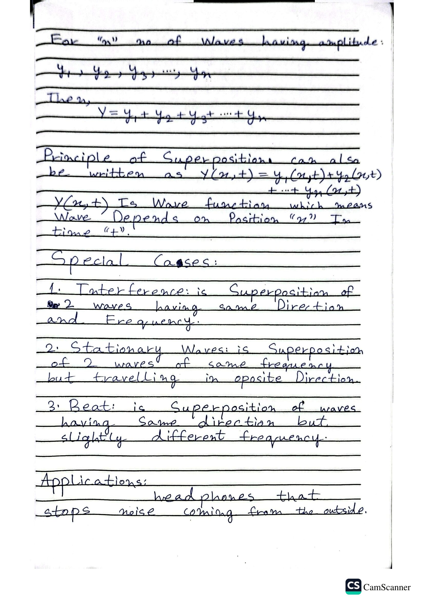

General Equation & Visual Cases
Superposition for N waves & Wave Phenomenon
General Superposition Formula:
For "n" number of Waves:
Y = y₁ + y₂ + y₃ + .... + yₙ
Wave Function Notation:
Y(x, t) = y₁(x, t) + y₂(x, t) + .... + yₙ(x, t)
Special Cases (Visualized):
1. Interference
Same Direction (→) · Same Frequency
2. Stationary / Standing Waves
Opposite Direction (→ + ←) · Same Frequency
3. Beats
Same Direction (→) · Slightly Different Frequency
Original Notebook Page

Add ch7_p4.jpg